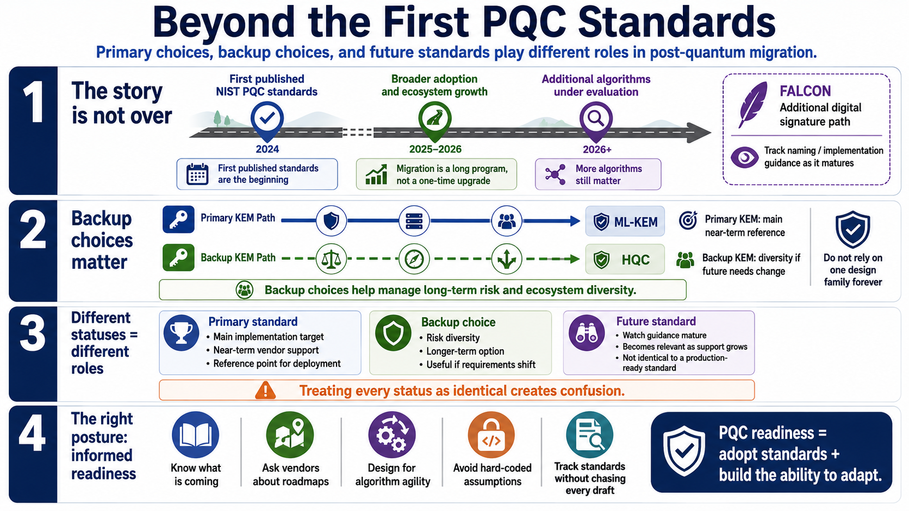

Algorithms Still in the Pipeline
Connecting to LMS... Progress: in progress

Narration
The first published NIST PQC standards are not the end of the migration story. Additional algorithms remain important because cryptographic migration is a long program, not a single product upgrade. Falcon was selected as an additional digital signature algorithm path, and NIST has continued work toward a separate standard for it. The standardized naming and final implementation expectations should be tracked as guidance matures.
HQC was selected as a backup key-establishment algorithm. Backup choices matter because organizations should not rely on a single design family forever when the ecosystem is still maturing. A backup KEM can provide another option if future analysis, implementation experience, or operational requirements create a need for diversity beyond the primary key-establishment standard.
Primary choices, backup choices, and future standards play different roles. A primary standard is the main reference point for near-term implementation and vendor support. A backup choice helps manage longer-term risk and diversity. A future standard may become relevant as products, validation programs, and protocol support develop. Treating every status as identical creates confusion.
Migration programs should track these algorithms without chasing every draft as if it were already production-ready. The right posture is informed readiness: know what is coming, ask vendors about roadmaps, design systems that can change algorithms, and avoid hard-coding assumptions that will make the next transition expensive. PQC readiness is partly about adopting standards and partly about building the ability to adapt.